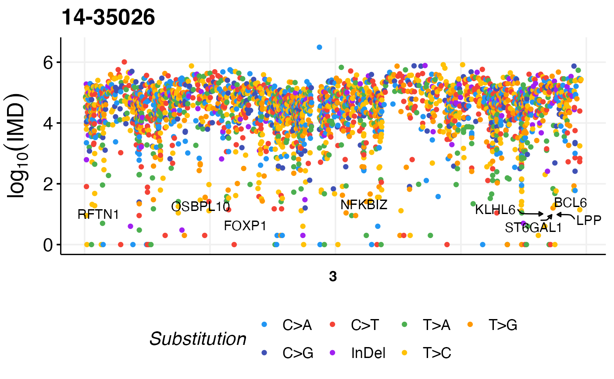

Rainfall Plot
prettyRainfallPlot.RdPlot a rainfall plot for one sample. This function takes in the MAF data frame, or path to a custom MAF file.
Usage
prettyRainfallPlot(
this_sample_id = NULL,
label_ashm_genes = TRUE,
projection = "grch37",
chromosome,
sv_data = NULL,
this_maf = NULL,
maf_path,
zoom_in_region,
this_seq_type,
label_sv = FALSE,
plot_title,
annotate_sv = TRUE
)Arguments
- this_sample_id
Sample id for the sample to display. This is argument is not required if you want a multi-sample plot but is otherwise needed.
- label_ashm_genes
Boolean argument indicating whether the aSHM regions will be labeled or not.
- projection
Specify projection (grch37 or hg38) of mutations. Default is grch37.
- chromosome
Provide one or more chromosomes to plot. The chr prefix can be inconsistent with projection and will be handled.
- sv_data
Optionally provide the SV data to be used for plotting instead of retreiving SVs through GAMBLR on the fly.
- this_maf
Specify custom MAF data frame of mutations.
- maf_path
Specify path to MAF file if it is not already loaded into data frame.
- zoom_in_region
Provide a specific region in the format "chromosome:start-end" to zoom in to a specific region.
- this_seq_type
Specify one of "genome" or "capture" when relying on the function to obtain mutations from a region (i.e. if you haven't provided a MAF or single sample_id)
- label_sv
Boolean argument to specify whether label SVs or not with green line on rainfall plot.
- plot_title
Specify the title for the returned plot, default is the provided sample_id
- annotate_sv
Optionally annotate intrachromosomal SVs to label the gene and partner information on the plot. Default is TRUE (perform annotation).
Details
Create a sample-level rainfall plot visualizing single nucleotide substitutions mutations for selected chromosomes.
Examples
suppressMessages(library(GAMBLR.open))
maf = GAMBLR.data::sample_data$grch37$maf
prettyRainfallPlot(this_sample_id = "14-35026",
this_maf = maf,
label_sv = FALSE,
chromosome = "3")
#> Subsetting MAF to the specified sample ...

if (FALSE) { # \dontrun{
# This mode will annotate and label SVs
prettyRainfallPlot(
this_sample_id = "DOHH-2",
this_seq_type = "genome",
zoom_in_region = "8:125252796-135253201",
label_sv = TRUE
)
# Will not annotate SVs (use raw bedpe) but still label them
prettyRainfallPlot(
this_sample_id = "DOHH-2",
this_seq_type = "genome",
zoom_in_region = "8:125252796-135253201",
label_sv = TRUE,
annotate_sv = FALSE
)
# Will use user-specified SV data
sv <- get_manta_sv(
these_sample_ids = "DOHH-2"
)
prettyRainfallPlot(
this_sample_id = "DOHH-2",
this_seq_type = "genome",
zoom_in_region = "8:125252796-135253201",
sv_data = sv,
label_sv = TRUE
)
} # }